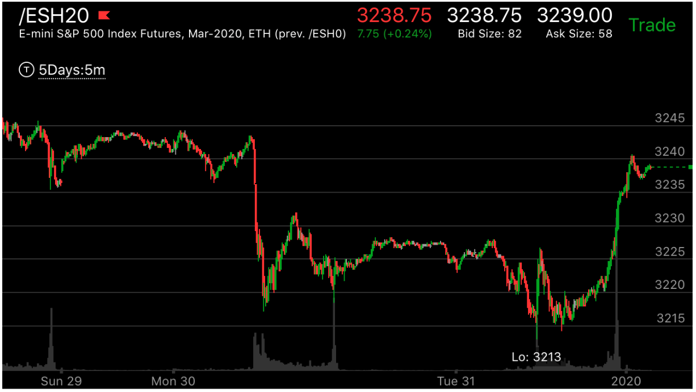
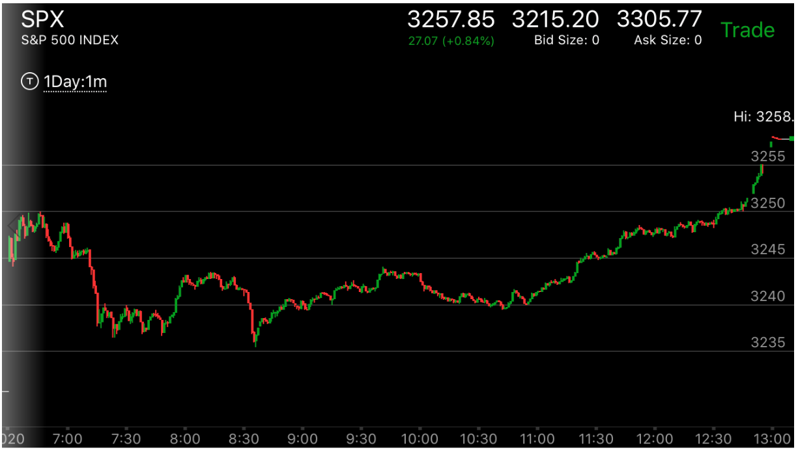

新级点立刻拉回走势
已经反转了，但是它在底部很不平坦，就开始了反转的运动。这时，它在运动后，常常反戈一击，创新的极点后，立刻拉回。这样，它不会形成跨越走势。
这个走势让人意外，因为它创了新低/新高，以为前面的走势没有结束。其实是虚晃一枪。

图示:Mon已经反转了。它开始上涨。然后拉回。可以看到它的底部很不平坦。Tue31.它创新低，立刻拉回。 形成了上涨的相对弱势。然后彻底反转。

图示:7：20到7：40在底部震荡很久。然后上涨，走平，再次下来，创新低。立刻拉回。然后大涨。